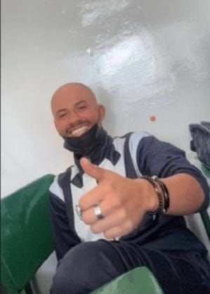
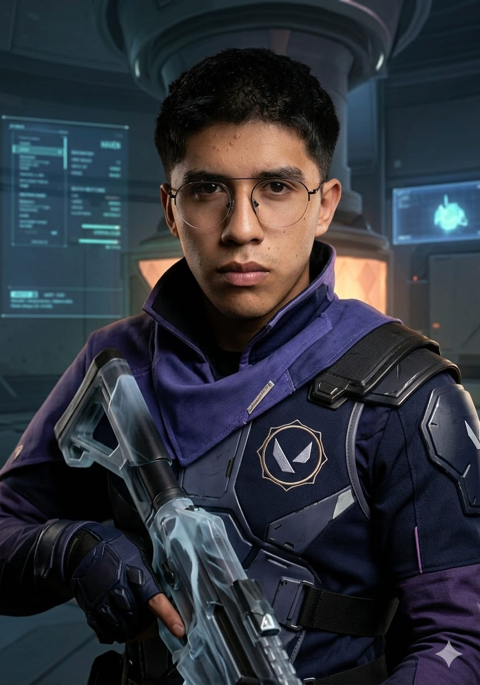

JUANPI "HOME-WRECKER"

"OTRO COMO YO EN EL PRÓXIMO SIGLO"

"OTRO COMO YO EN EL PRÓXIMO SIGLO"

Soy Juan Pablo Paredes (Juanpi), desarrollador en formación. Desde pequeño me llamó la atención la tecnología y los videojuegos, lo que despertó mi interés por entender cómo funcionan por dentro. Actualmente estudio Ingeniería en Software y estoy fortaleciendo mis habilidades en desarrollo web y lógica de programación, creando proyectos con identidad visual y desafíos que me impulsen a superarme constantemente.
Me apasiona el idioma inglés y cuento con certificaciones Cambridge y TOELF que respaldan mi nivel, trato de practicarlo constantemente porque lo considero una herramienta clave para crecer en el mundo tecnológico. También me gusta mantenerme activo practicando distintos deportes, ya que creo que la disciplina, la constancia y la mentalidad competitiva te llevan a ser mejor diariamente.
Para finalizar, fuera del entorno digital, soy fanático del estilo JDM (Japanese Domestic Market), también me gustan las motos de alto cilindraje y la cultura del drifting, especialmente del Mid Night Club.
Desarrollé un minijuego arcade al estilo "shoot 'em up" donde los enemigos descienden cada vez más rápido, aumentando progresivamente la dificultad. El objetivo es sobrevivir el mayor tiempo posible poniendo a prueba reflejos y puntería.
JUGAR AHORA